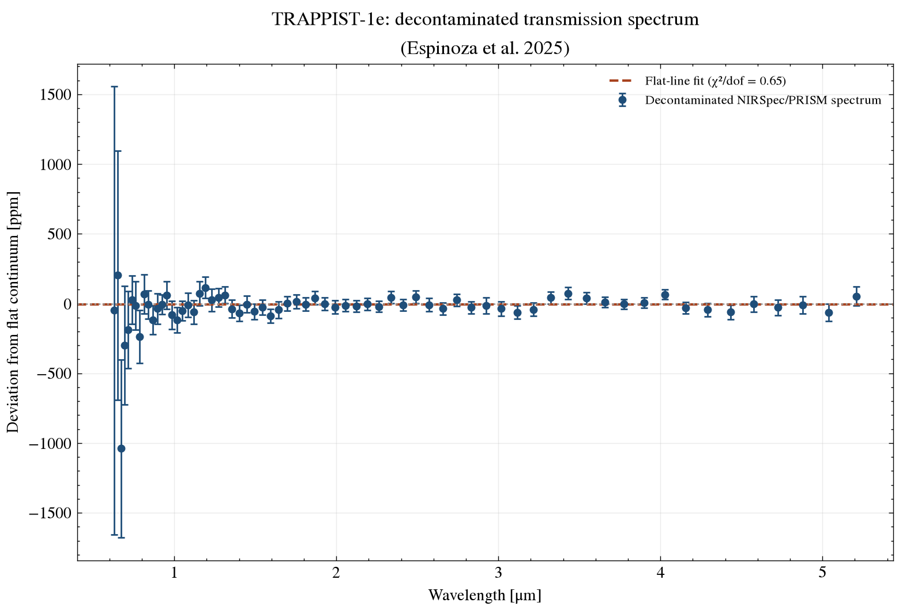
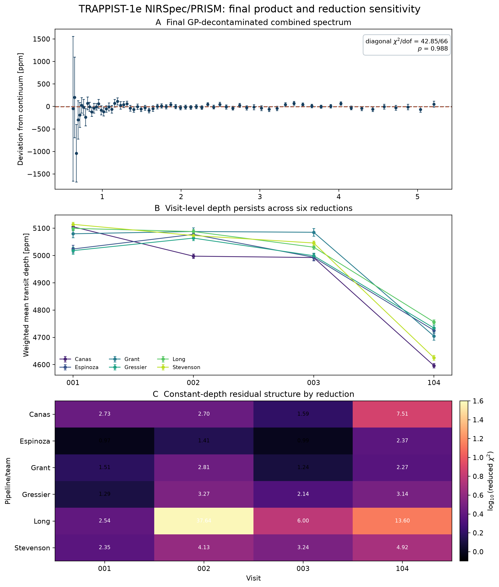

Data source notes
SHA-256, LF-normalised text
97065b5785900e6a9105e56c0c031d272410b47556309bb59fe6bf00f4c22e06Browse 13 versioned evidence files. Table previews simply display stored rows. Consult the project report for the source, processing steps, and inference assumptions.


97065b5785900e6a9105e56c0c031d272410b47556309bb59fe6bf00f4c22e06d07c0aa4916a714f5cdb6205d653b3bf57159e2cde9e18c1c616c43786ea8835c59d1d0642fa95b4a05bdbdee88dd97b7809681e57c779b0eaebdfa2a41943763dbfebb31ca37e7c67836eda25a2ec0a7b7a6fb983494336db493bdefcf6d98d7ec05065574c793f04c9990d24a044e37d824a2704ad092151b6d7012227ea71e784d67c96c76668614c527a7fb6235d7d6e2ba26ff0b26df86645b74862eb8e78a1e5843448a5eea8351091356dfb44a61c56bab543bd54755d1a8439c53ab76e8ff61a4a5d2cacc54eac51851852da33d564b2d9cacd0d862ebbec80def274| quantity | value | unit |
|---|---|---|
| n_wavelength_points | 67 | count |
| flat_line_deviation | -4.99 | ppm |
| flat_line_chi2 | 42.85 | dimensionless |
| flat_line_dof | 66 | count |
f61a45171547ccc5d873e2caff2156d357176940cb9542f92438745101496228| visit | n_pipeline_reductions | median_weighted_mean_depth_ppm | minimum_weighted_mean_depth_ppm | maximum_weighted_mean_depth_ppm | pipeline_range_ppm | median_reduced_chi2 |
|---|---|---|---|---|---|---|
| 001 | 6 | 5089.580165685209 | 5017.980402715773 | 5114.259422496075 | 96.2790197803015 | 1.929192078945047 |
| 002 | 6 | 5075.356607348953 | 4997.598029261682 | 5088.002290256056 | 90.40426099437354 | 3.0375825981300624 |
| 003 | 6 | 5014.933822796048 | 4992.574295466295 | 5085.155144831791 | 92.58084936549676 | 1.8637883690906603 |
| 104 | 6 | 4715.165119915416 | 4596.290874410837 | 4756.310086756253 | 160.01921234541624 | 4.033135110623876 |
a13ed851c8d829a546b311c82e8ea206c0158247eb0a2430b8b5fbdbc93a6775| pipeline | visit | n_bins | weighted_mean_depth_ppm | mean_standard_error_ppm | chi2 | dof |
|---|---|---|---|---|---|---|
| Canas | 001 | 66 | 5105.362115211077 | 8.549240333084857 | 177.28940044598298 | 65 |
| Canas | 002 | 68 | 4997.598029261682 | 8.371677907437762 | 181.0539860088435 | 67 |
| Canas | 003 | 67 | 4992.574295466295 | 8.713252568974713 | 104.77087059735175 | 66 |
| Canas | 104 | 68 | 4596.290874410837 | 8.32529612861503 | 503.43287372445803 | 67 |
833a941c22ce832041c09ddd3518b52c183860532b241918e32302c3eee53207f18caf8bf7cec3d5b61320d467230911ba03e8ffb8357f6df00bcdebfe6f7faae9cea86097b23ea186660286f4f24b67938aab0821c419f39d987b60a8eb2a66SHA-256 values verify the stored files. They do not independently validate the scientific analysis. Rebuild this page with python scripts/evidence_catalog.py followed by python scripts/render_evidence_page.py.